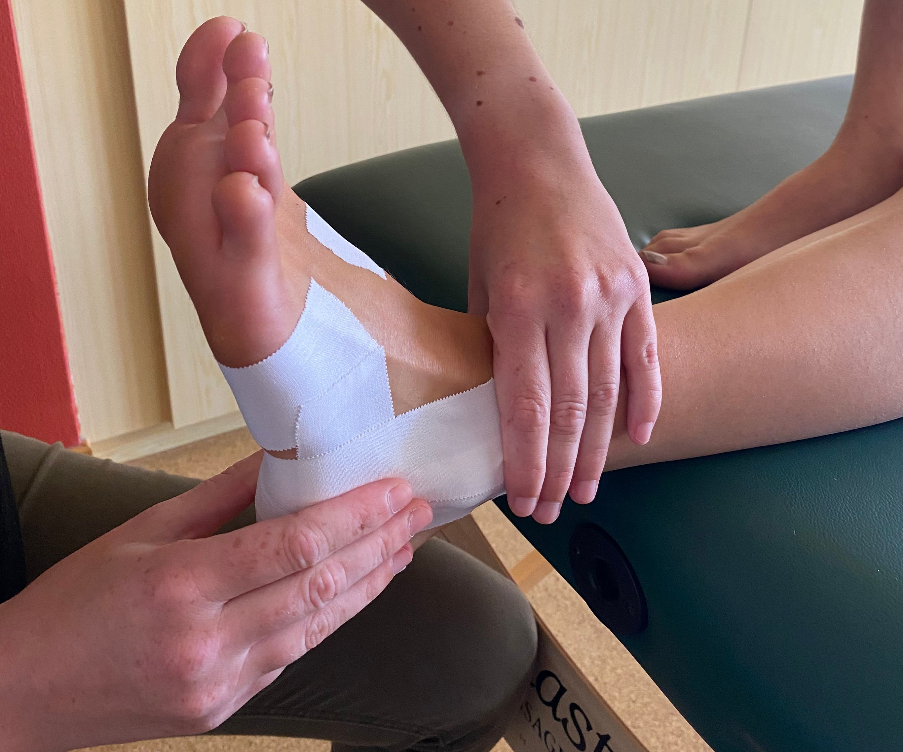

A Generic Page

Bij taping hebben we als doel anatomische structuren te stabiliseren of te ondersteunen, het kan gaan over gewrichten of spieren.
| Sporttaping of niet-elastische ‘witte’ tape | Bij sporttaping beogen we vooral de stabiliteit van een gewricht te ondersteunen. Het kan gaan over een enkel, een knie, maar ook schouder of pols… Sporttaping is bedoelt om het gewricht te stabiliseren of pijnlijke bewegingen te beperken tijdens een (sport)activiteit. Denk bijvoorbeeld aan een voetbalmatch of tenniswedstrijd. |
| Kinesiotaping | Bij kinesiotape brengen we de elastische tape aan wanneer de spier in verlengde positie is, wanneer het lichaamsdeel dan verkort, rimpelt de tape omhoog, waarbij het een liftende werking heeft op de huid. Dit is het neurofysiologische effect van de tape en het doel hiervan is het bevorderen van de circulatie, de druk van pijngevoelige structuren afnemen en input in het systeem versterken (feedback) om een ondersteunend of remmend effect te creëren. |
| Dynamic taping | Dynamic tape® is ook een elastische tape zoals kinesiotape, maar het is gemaakt van ander materiaal, heeft andere fysieke eigenschappen, rekt in alle richtingen en heeft geen rigide eindpunt. Door het aan te brengen met de spieren in verkorte positie absorbeert het de belasting, vertraagt de beweging en vermindert de werklast van de ondersteunde spieren. Het heeft naast het neurofysiologisch effect dus ook een mechanisch effect op structuren. |